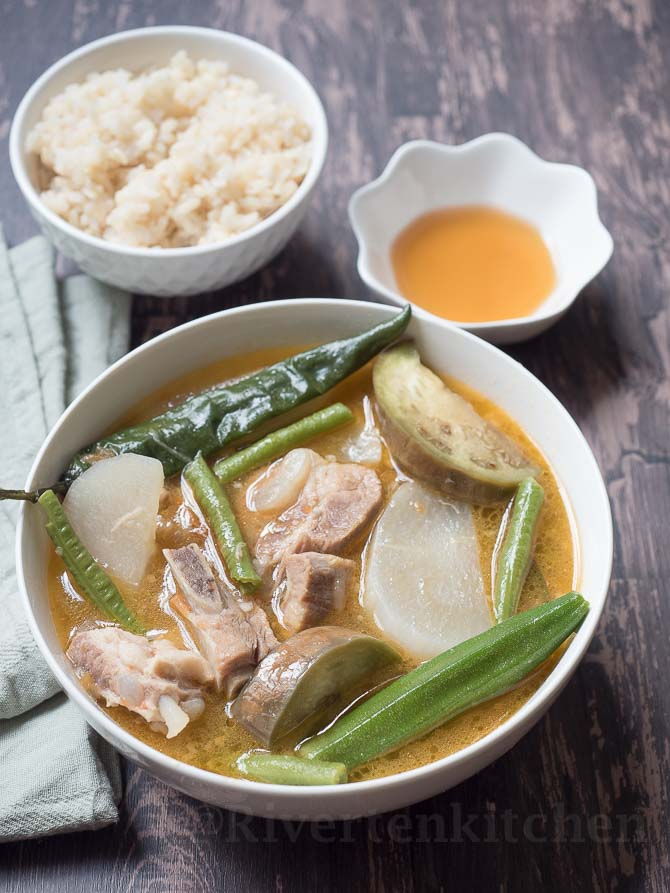

Sinigang

Servings
Ingredients
- 1 tbsp vegetable oil
- 1 small onion, chopped
- 1 tsp salt
- 1 1/2 piece fresh ginger, chopped
- 2 medium whole plum tomatoes
- 1 pound bone-in pork chops
- 4 cups water
- 1 package tamarind soup base
- 1/2 pound fresh green beans, trimmed
- Heat the vegetable oil in a skillet over medium heat
- Stir in onion and cook until soft
- Season with salt
- Stir in ginger, tomatoes, and pokr chops
- Cover and reduce heat to medium-low
- Stir and cook util pork turns brown
- Pour in water and tamarind soup base
- Bring to a boil, then reduce heat
- Cook until pork is tender
- Stir in green beans and cook until tender